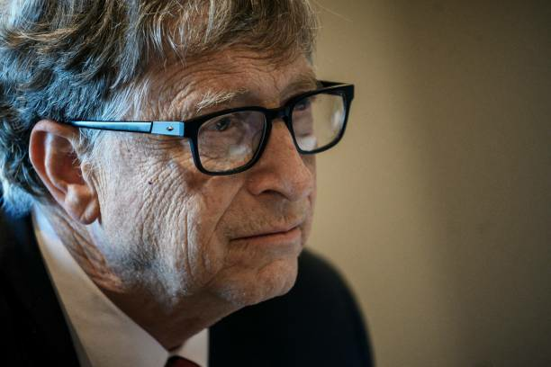
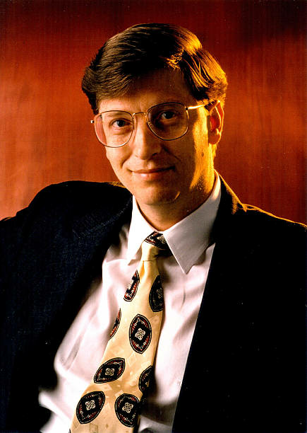

Bill Gates, in full William Henry Gates III, (born October 28, 1955, Seattle, Washington, U.S.),
American computer programmer and entrepreneur who cofounded Microsoft Corporation, the world’s largest personal-computer
software company.
As a billionaire technical genius, Bill Gates changed the world by noticing the lack of a microchip and technology,
and took a big step and found Microsoft. He brought America a new revolution of technology, giving almost everyone a
computer on every desk, and in every home. Entrepreneur and businessman Bill Gates and his business partner Paul
Allen founded and built the world's largest software business, Microsoft, through technological innovation,
keen business strategy and aggressive business tactics. In the process, Gates became one of the richest men in the world.
Gates is a noted philanthropist and has pledged a significant amount of money to research and charitable causes during
the coronavirus pandemic. He has given more than $50 billion to charity since 1994.
However, his wealth has grown even faster than he has donated money.

THE EARLY YEARS
Gates wrote his first software program at the age of 13. In high school he helped form a group of programmers who
computerized their school’s payroll system and founded Traf-O-Data, a company that sold traffic-counting systems to local governments.
In 1975 Gates, then a sophomore at Harvard University, used on large computers, for use on microcomputers.
With the success of this project, Gates left Harvard during his junior year and, with Allen, formed Microsoft.
Gates’s sway over the infant microcomputer industry greatly increased when Microsoft licensed an operating system called
MS-DOS to International Business Machines Corporation—then the world’s biggest computer supplier and industry pacesetter—for use
on its first microcomputer, the IBM PC (personal computer). After the machine’s release in 1981, IBM quickly set the technical
standard for the PC industry, and MS-DOS likewise pushed out competing operating systems.
While Microsoft’s independence strained relations with IBM, Gates deftly manipulated the larger company so that it became
permanently dependent on him for crucial software. Makers of IBM-compatible PCs, or clones,
also turned to Microsoft for their basic software. By the start of the 1990s he had become the
PC industry’s ultimate kingmaker.

BILL GATE'S EDUCATIONAL EXPERIENCES AND EARLY CAREER
Bill Gates was born in Seattle, Washington on October 28, 1955. He is the son of William H. Gates Sr. (1925–2020)
and Mary Maxwell Gates (1929–1994). His ancestry includes English, German, and Irish/Scots-Irish. His father was a prominent lawyer,
and his mother served on the board of directors for First Interstate BancSystem and the United Way of America.
Gates's maternal grandfather was J. W. Maxwell, a national bank president. Gates has an older sister Kristi (Kristianne)
and a younger sister Libby. He is the fourth of his name in his family but is known as William Gates III or "Trey" (i.e., three)
because his father had the "II" suffix. The family lived in the Sand Point area of Seattle in a home that was damaged by
a rare tornado when Gates was seven years old.
Early in his life, Gates observed that his parents wanted him to pursue a law career. When he was young, his family regularly attended
a church of the Congregational Christian Churches, a Protestant Reformed denomination. Gates was small for his age and was bullied as
a child. The family encouraged competition; one visitor reported that "it didn't matter whether it was hearts or
pickleball or swimming to the dock; there was always a reward for winning and there was always a penalty for losing".
BILL GATES CAREER
William Henry Gates III (born October 28, 1955) is an American business magnate, software developer,
investor, author, and philanthropist. He is a co-founder of Microsoft, along with his late childhood friend Paul Allen.
During his career at Microsoft, Gates held the positions of chairman, chief executive officer (CEO),
president and chief software architect, while also being the largest individual shareholder until May 2014.
He was a major entrepreneur of the microcomputer revolution of the 1970s and 1980s.
Gates was born and raised in Seattle, Washington. In 1975, he and Allen founded Microsoft in Albuquerque, New Mexico.
It became the world's largest personal computer software company Gates led the company as chairman and CEO until stepping
down as CEO in January 2000, succeeded by Steve Ballmer, but he remained chairman of the board of directors and became chief
software architect.
During the late 1990s, he was criticized for his business tactics, which have been considered anti-competitive.
This opinion has been upheld by numerous court rulings.In June 2008, Gates transitioned to a part-time role at Microsoft and
full-time work at the Bill & Melinda Gates Foundation, the private charitable foundation he and his then-wife, Melinda Gates,
established in 2000.He stepped down as chairman of the board of Microsoft in February 2014 and assumed a new post as technology
adviser to support the newly appointed CEO Satya Nadella. In March 2020, Gates left his board positions at Microsoft and Berkshire
Hathaway to focus on his philanthropic efforts including climate change, global health and development, and education.
Bill Gates founded Microsoft in 1976 when he formed a contract with MITS (Micro Instrumentation and Telemetry Systems) to develop a
basic operating system for their new microcomputers. In the early days, Bill Gates would review every line of code. He was also
involved in several aspects of Microsoft’s business such as packing and sending off orders.
In 1990 Microsoft released its first version of Windows. This was a breakthrough in operating software as it replaced text
interfaces with graphical interfaces. It soon became a best seller and was able to capture the majority of the operating system
market share. In 1995 Windows 95 was released, setting new standards and features for operating systems. This version of Windows
has been the backbone of all future releases from Windows 2000 to the latest XP and Vista.
From 2008 Gates has worked full time on his philanthropic interests. It is estimated Gates and his wife Melinda have
given away $28 billion via their charitable foundation – including $8 billion to improve global health.